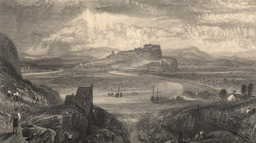

|
 Stirling, engraved by W. Miller after J.M.W. Turner (1836).
From: The Prose Works of Sir Walter Scott, Bart. Vol. 23 (Edinburgh: Cadell, 1836). Controlling the lowest crossing point of the River Forth, Stirling has been an important strategic stronghold since pre-Roman times. One of Scotland's first royal burghs in 1124, it was a major trading town throughout the middle ages. The city played a prominent role in the Wars of Independence, seeing decisive Scottish victories at Stirling Bridge (1297) and nearby Bannockburn (1314). During the Renaissance, Sirling became an artistic centre as the home of James IV's brilliant court.
|